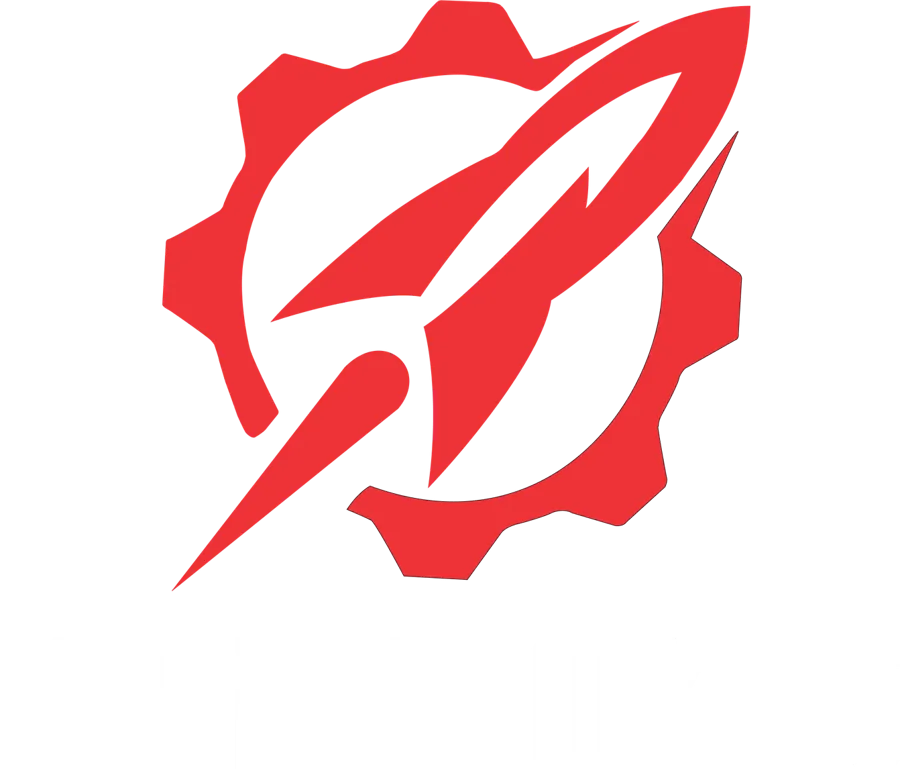
Foguetes de
sondagem SRAD
Da simulação ao lançamento: a Minerva Rockets projeta, fabrica, testa e lança foguetes com motores próprios e disputa as maiores competições universitárias do mundo.
Engenharia que voa
Fundada em 2016 no Centro de Tecnologia da UFRJ, a Minerva Rockets forma engenheiros, pesquisadores e inovadores por meio de projetos aeroespaciais completos.
Depois de um período de dificuldades, a equipe se reestruturou e consolidou a capacidade de projetar, construir e validar sistemas complexos. O Hemera é o resultado dessa nova fase. O trabalho segue o modelo em V e o ciclo de vida de projetos da NASA, com revisões formais de projeto, um gerente e um vice por setor técnico e controle semanal de atividades.
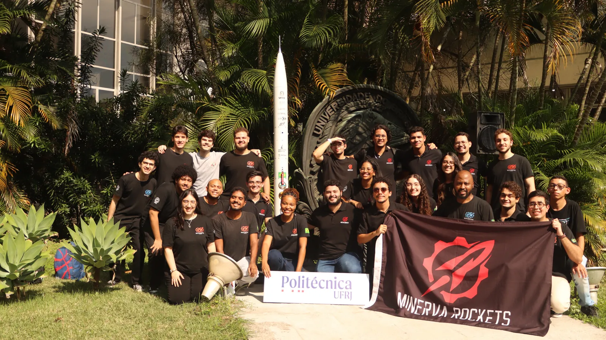
Por dentro do foguete
Cada subsistema é responsabilidade de uma subequipe. Clique para conhecer a subequipe responsável.
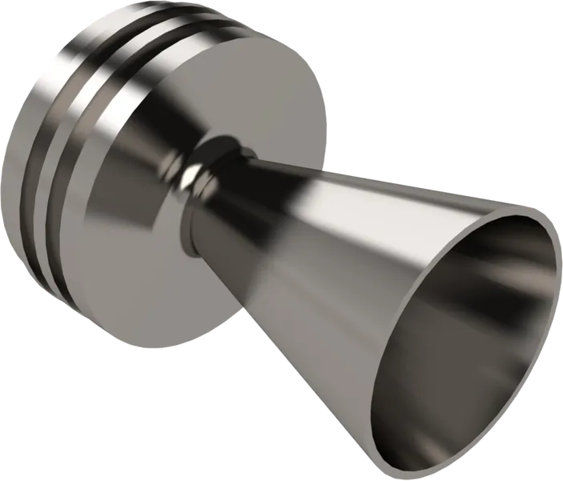
Motor Notus v.1
Motor sólido SRAD classe N: 9,5 kg de KNSB (65% nitrato de potássio, 35% sorbitol), 10,8 kN·s de impulso total, 5,8 MPa de pressão e 2,9 s de queima.
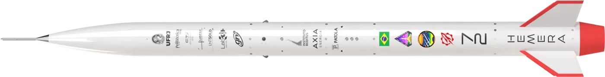
Fuselagem modular
Compósito de fibra de vidro e epóxi com 174 mm de diâmetro, coifa Von Kármán, aletas enflechadas com fibra de carbono e acopladores de alumínio 6101-T6. Margem de estabilidade de 1,8 calibre.
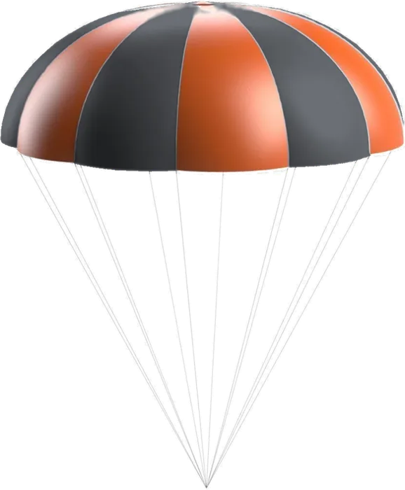
Dois estágios com reefing
Ejeção pneumática por CO₂ no apogeu, paraquedas de nylon HyperD com skirt reefing e line cutters a 500 m. Desce a 20 m/s e depois a 6,5 m/s.
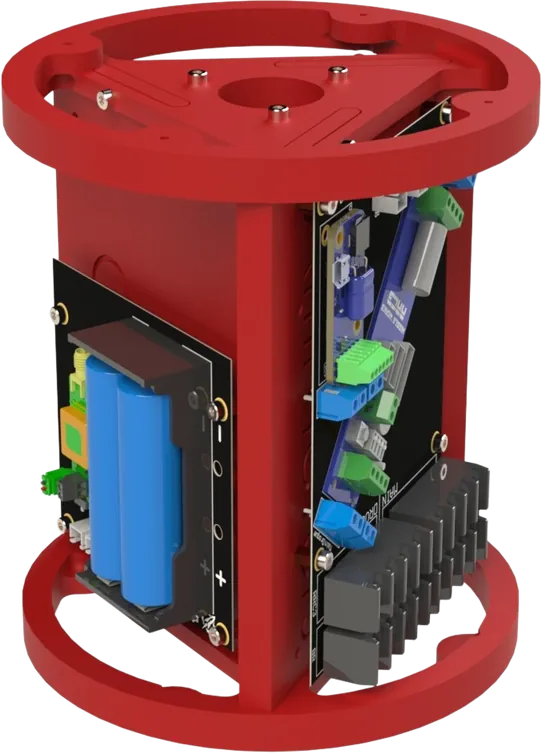
Aviônica redundante
Computadores de voo RRC3 (primário) e Blue Raven (reserva), rastreador GPS Featherweight e sensores barométricos, IMU e GNSS.
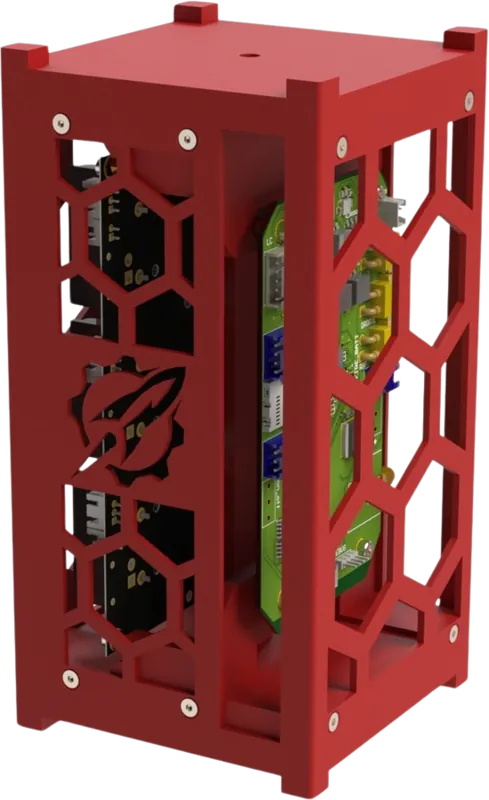
CubeSat 2U
Abriga a aviônica do futuro Hemera v.2. Este voo é o passo de validação para o foguete de dois estágios.
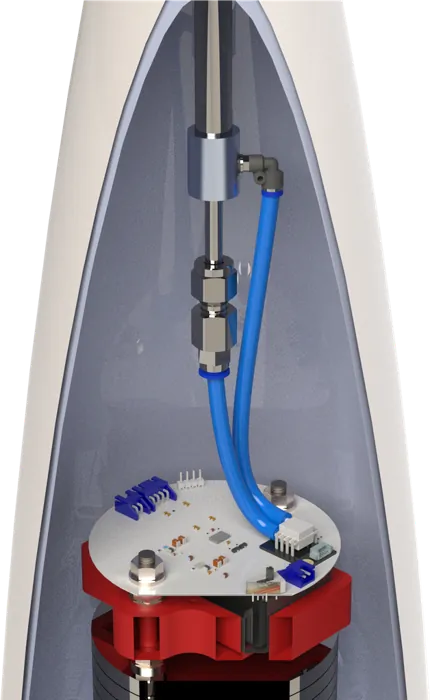
Pitot e célula de carga
Tubo de Pitot para velocidade, célula de carga para o choque de abertura do paraquedas e sensor de pressão no motor.
Subequipes da Minerva Rockets
Cada subequipe tem gerente e membros dedicados. Abra um cartão para ver quem está nela.
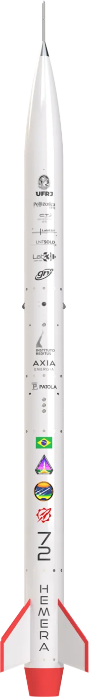
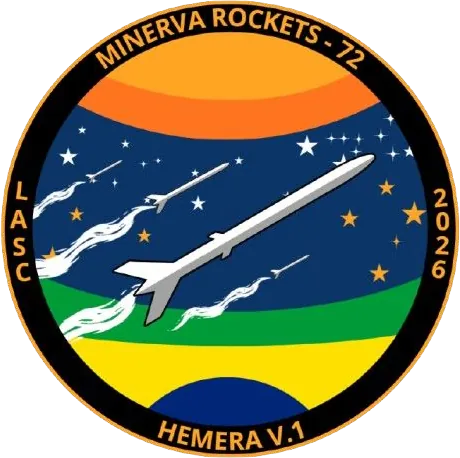
Hemera v.1
Team 503 na IREC 2026, com voo e recuperação nominais, e Team 72 na LASC 2026, com voo a 3.339 m. Em reconstrução.
Do lançamento ao pouso
Ignição
O Notus v.1 queima por 2,9 s e leva o foguete a Mach 0,8.
Apogeu
A cerca de 3.000 m, o ejetor de CO₂ libera a coifa e o paraquedas piloto.
Descida rizada
O paraquedas principal desce rizado para reduzir a deriva, a 20 m/s.
500 m
Os line cutters abrem o paraquedas por completo e o pouso acontece a 6,5 m/s.
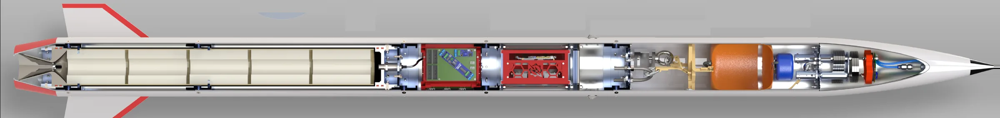
Lançamentos e testes
Mark-1, Jararaca, Insônia, Imperius, Sidera e o teste estático de um motor classe E. Clique na foto do centro para assistir.
Conquistas
Foguetes anteriores incluem Mark-1, Jararaca, Insônia, Imperius (3 km), Sidera (1.000 m), Leônidas (300 m), Aurora (3 km), Caronte e o Chimera, com motores híbridos. Veja todos em Projetos.
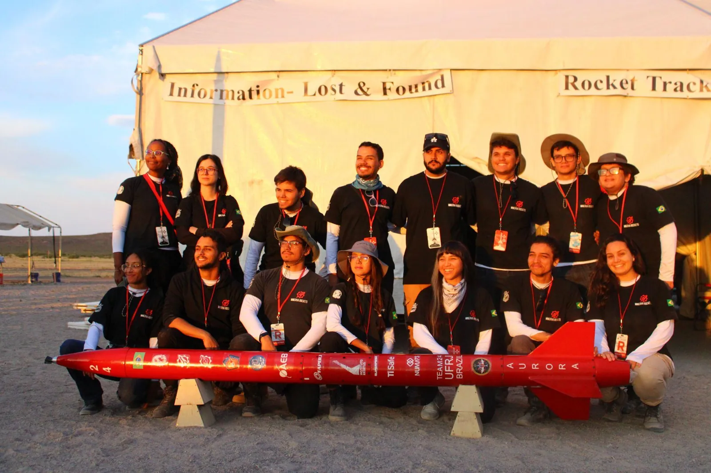
Próximo passo: Hemera v.2
Um foguete de dois estágios propulsionados, com o Hemera v.1 como estágio superior. Ajude a tirar esse projeto do papel.
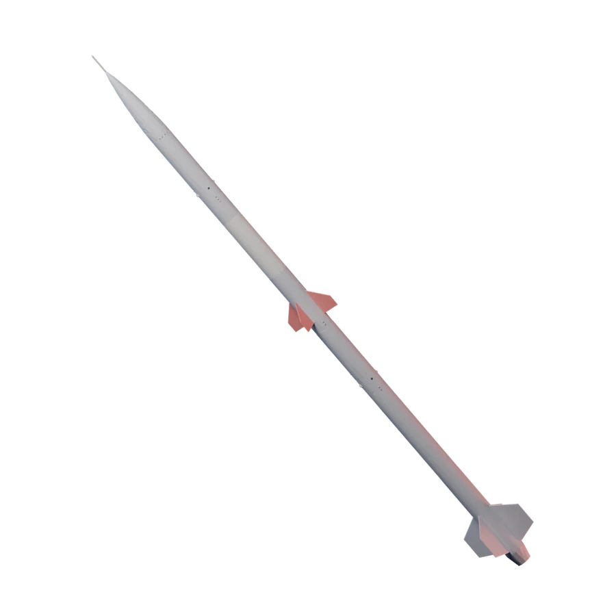